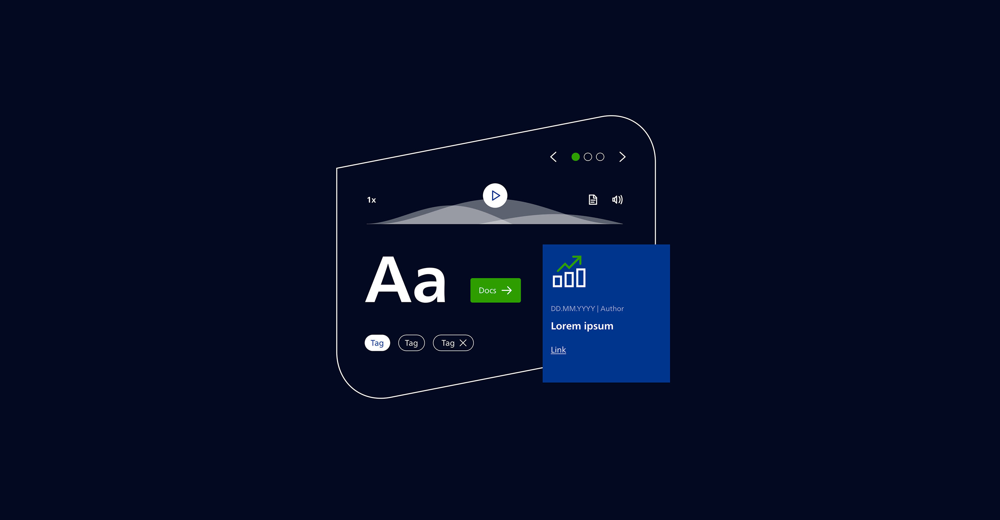
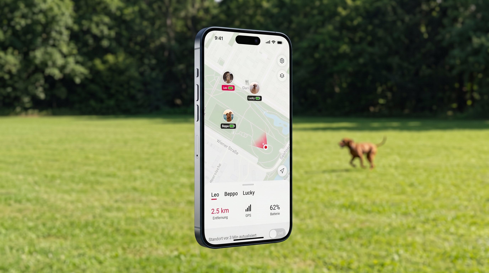

Cologne · remote-friendly · EN / DE / ES
Product designer with four years of agency experience navigating design systems, accessibility culture and AI tooling
Work snippets
ARD Mediathek / identifying moods and motivations and weighing them with AI
- Independently ran the Google AI Studio side of a two-toolchain test
- Wrote a small Python tool to score results according to consistency metrics
- The machines turned out more consistent than the humans. The PoC moved on to MVP planning
Solid Design System / documentation, patterns, landing page
- Sole UX designer on a system nominated for the UX Design Awards 2024
- Talked the client out of rigid drop-in blocks and into patterns that document how things work
- Concept for the landing page. It's live, you can check it out here

Dog Tracker / restoring team dynamics and reworking under unexpected constraints changes
- Designed the route-history feature end to end and adapted to GPS-device technical constraints
- Rebuilt the QA process and helped two teams improve communication and collaboration.
- Ended up leading UX after the lead left. Never shipped. Still one of the projects I learned most from

Accessibility task force / changing corporate culture
- Co-founded a four-person task force to bring accessibility into the agency's everyday work
- Built the internal accessibility toolbox and ran an open round where anyone could bring a question, share what worked, and pick up what they'd missed
- Audited client products under the new German law and sat with developers while they fixed things
How I collaborate
I'm a product designer with a background in cultural studies, linguistics and architecture. It sounds like three different paths, but for me it's felt like one question asked three ways: how do people make sense of reality?
I work best in a room with other people, physically or virtually. A team which validates each other's approach to a problem is the most enriching environment for both team and product as living beings. Validation doesn't mean surrender, but accepting the challenge.